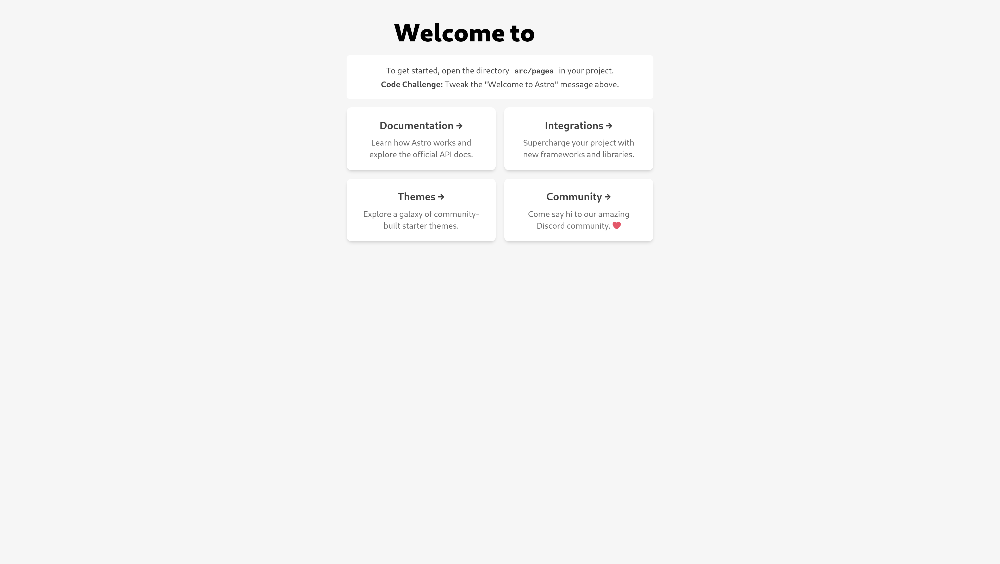

Building a Basic NodeJS Server for NixOS
A short start on a basic NodeJS server for NixOS, beginning from an Astro project.
To start, I've set up an Astro project.
npm create astro@latest
npm run start

A short start on a basic NodeJS server for NixOS, beginning from an Astro project.
To start, I've set up an Astro project.
npm create astro@latest
npm run start
